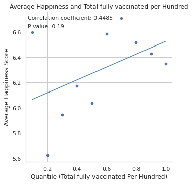

Global Happiness Analysis 2022
Python: Data Exploration, Pandas, Seaborn

This project was completed during my internship at iXperience with the purpose of honing analytic skills through global research. Using data wrangling and visualizations in Python, we answer the following five questions:
• Are there any regional differences in happiness?
• What factors correlate with happiness the most?
• What is the impact of COVID-19 on world happiness?
• What are certain limitations to this data set and analysis in general?
• What actionable suggestions can we make to increase world happiness?
OVERVIEW: HAPPINESS BY COUNTRY
Each country's happiness score (scale: 0-10) is comprised of 7 hypothesized underlying determinants: GDP per capita, social support, life expectancy, freedom to make choices, generosity, corruption perception, and dystopia + residual. We observe the individual scores of each factor considered for happiness to see the overall makeup of a few notable countries' happiness scores using a horizontal stacked bar chart.

According to the report, Dystopia is used as a benchmark to "compare contributions from each of the six factors...equal to the lowest national averages" across the six variables in the world (1.83 out of 10). Adding each country's own predictor error (a positive/negative residual) to the dystopia score ensures at least a zero or positive contribution to each of the factors. We were unable to display all measurements from every country due to the length of information therefore we have taken about a third of the countries for some visual context.
REGIONAL DIFFERENCES IN HAPPINESS
Although the original dataset did not have continents column, we merged the COVID-19 dataset (updated 06/2022) to group each country by the continent and calculated the average happiness score. Further breaking down each continent, we find that Finland has the highest score of 7.821 and Afghanistan with the lowest score at 2.404. Below are the breakdowns of highest scores by factors:
• GDP per capita: Luxembourg
• Social support: Iceland
• Healthy life expectancy: Cambodia
• Freedom to make life choices: Cambodia
• Generosity: Indonesia
• Perceptions of corruption: Singapore
CORRELATION ANALYSIS
We run a linear regression model of the happiness scores of each country against each of the six factors to identify what has the greatest affect on the happiness index. We find social support has the most affect on the happiness index with the highest R-squared value of 0.5818. The factor with the least correlation is generosity, which has an R-squared value of 0.002621. Below are the 6 graphs for the regression of the happiness scores for each contributing variable.

COVID-19 EFFECTS ON HAPPINESS SCORES
Using the merged COVID-19 data, we also want to find the Pearson correlation coefficients of each of the six factors and the covid vaccination rates against each other to find the best correlation against the happiness score. Some of the notable and interesting correlations are happiness and social support (0.83), - which should not come as a surprise - life expectancy and GDP per capita (0.81), and GDP per capita with happiness scores (0.81). This is displayed through a custom factor correlation heatmap below.

Some disclaimers regarding certain "matching" factors such as gdp_per_capita (from COVID-19 dataset) and GDP per Capita (happiness dataset) is that there could be some discrepancies between the data collected in the COVID-19 data and the Global Happiness data such as missing data, hence why they do not have an exact correlation of 1.00 as it should be.
What we are interested in from these datasets is the vaccination rates and average happiness, in which we will investigate into further detail through breaking down the data in quantiles to evaluate the overall correlation.

Here, we run a hypothesis test on this linear regression model of the quantiles of total fully vaccinated rates (per hundred) against the average happiness scores, grouped by every 10th percentile.
• H₀: There is NO relationship between average happiness and total fully vaccinated people per hundred
• P-value: 0.0082 < 0.05, therefore this data is statistically significant
• Conclusion: We can reject the null hypothesis and confirm that there is a strong positive correlation between these two factors
LIMITATIONS AND RECOMMENDATIONS
First, we must disclaim that with every regression analysis, we must address the post-hoc fallacy that correlation does not equal causation. In order to establish the cause and effect, there must be properly monitored treatment-control studies on these factors along with A/B testing to establish causation. As described by the dataset which we extracted the information from,
“[The six factors] have no impact on the total score reported for each country, but they do explain why some countries rank higher than others.” (Kaggle). In other words, these factors do not affect world happiness directly, but explains the proportions of each factor of how much it contributes to the total happiness.
Another factor to consider is that the subjects' responses to some questions can vary over time, and is subjective on its scalings yet these are not taken into consideration for certain questions. For example, the scaling of freedom/generousity is simply a binary response of 0 or 1, which ignores the variation and complexity behind the question.
However based on our exploratory analysis, we can make a couple of actionable recommendations that would increase world happiness.
• Increase vaccination rates and more accessible healthcare
• Identify where key essential resources are clustered and promote a more equitable worldwide distribution, especially in unprecedented times
• Monitor global patterns of wealth accumulation and economic growth to ensure consistent developments worldwide
• Increase exposure and a larger global perspective of human lives across the globe to increase awareness and social support from more developed countries and affluent citizens through responsible news coverage and social media
To further this analysis, our observations could be used to create a prediction model using multiple linear regression to predict the happiness score of our six factors on a hypothetical country in 2022.
CREDITS AND DATASET INFO
Google Colab code (Python)
Kaggle Happiness Dataset (2022)
Kaggle COVID-19 Dataset (up-to-date)
World Happiness 2022: Report and Appendix
This project was a collaboration between fellow iXperience colleagues: Phu Dang, Sean Ku, and Sofia Avila. The project was presented on July 24, 2022 to the iXperience cohort under the supervision of Taryn Morris.